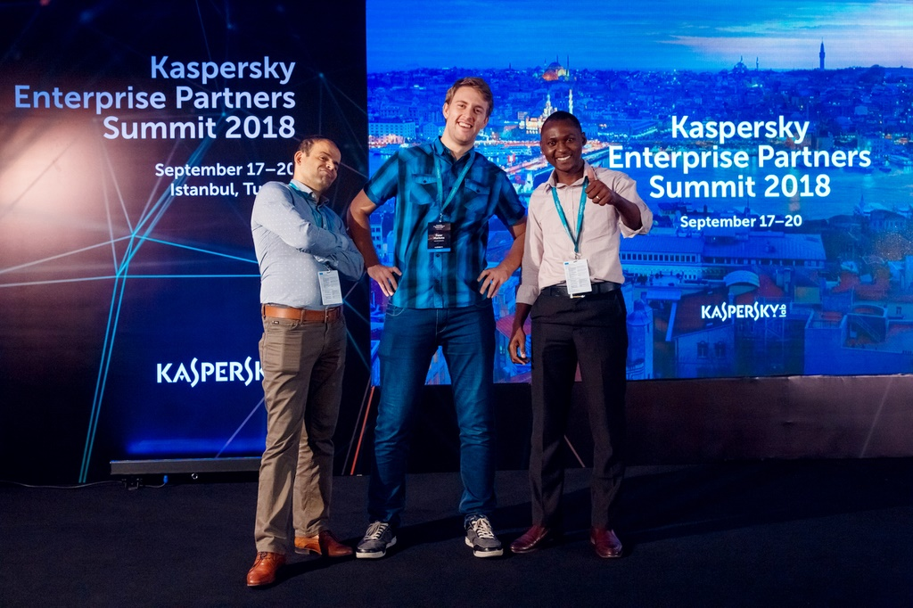

Biography
Adaptable, self-driven and dedicated 22-year old security engineer with a solid background in software/web development. My first encounter with cybersecurity started with Kali Linux tricks and hacks which was fun. At that time I did not realize how wide this area is. Today a passion which was born while playing with different hacks intended for my friends is excelling my 8-hour shifts and makes me learn new stuff every single day.
My current position at Ibis Instruments has a focus on integrations of security products from our three main vendors (Kaspersky Lab, Checkpoint and IBM Security) along with pre-sales duties coming with it. This role is extremely challenging since it covers a wide range of products along with the newest technologies needed to be embraced swiftly with a very little time to look back.
My main interests are in the areas of: - IT - Enterprise/SMB Security; - Penetration testing/offensive security; - User behavior analytics; - Cryptography; - Cloud security;
Even though pretty young I am extremely motivated to advance rapidly and am always seeking new opportunities. I believe in professional development, leading by an example, and that you are only as strong as your weakest link (just like in security :D). Challenges and projects that require me to work out of my comfort and knowledge set is something I enjoy because I take this as a great opportunity to learn something new.